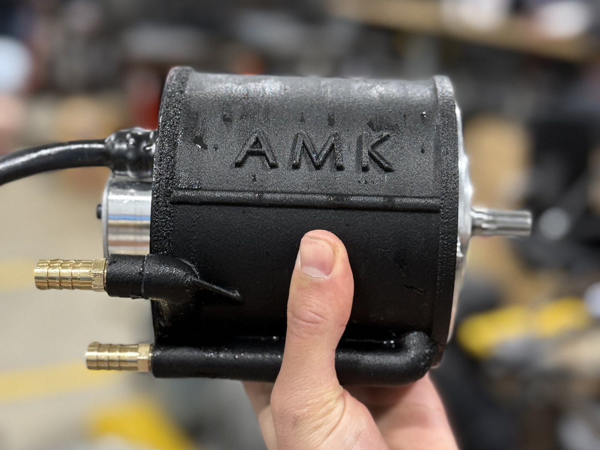
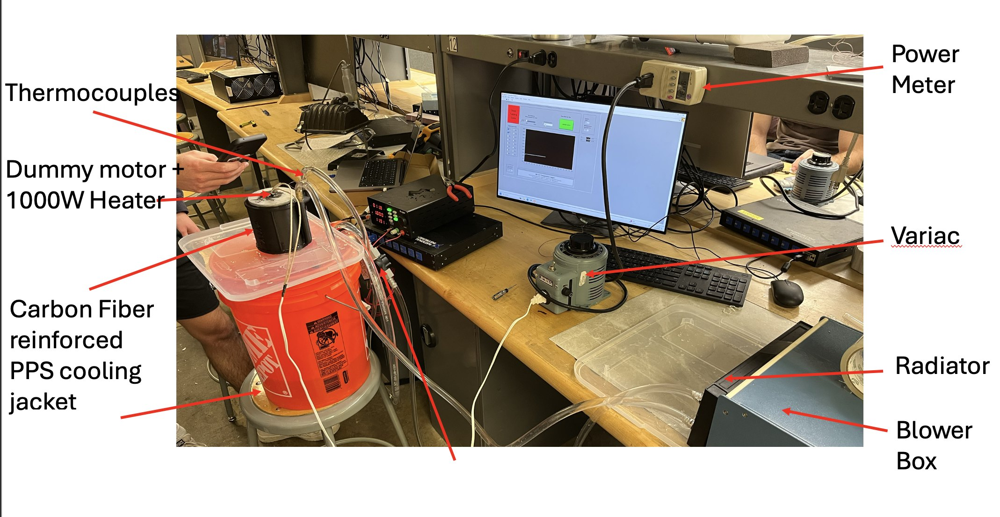
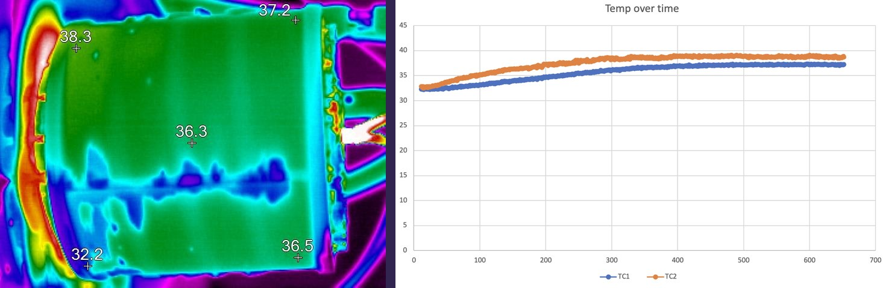
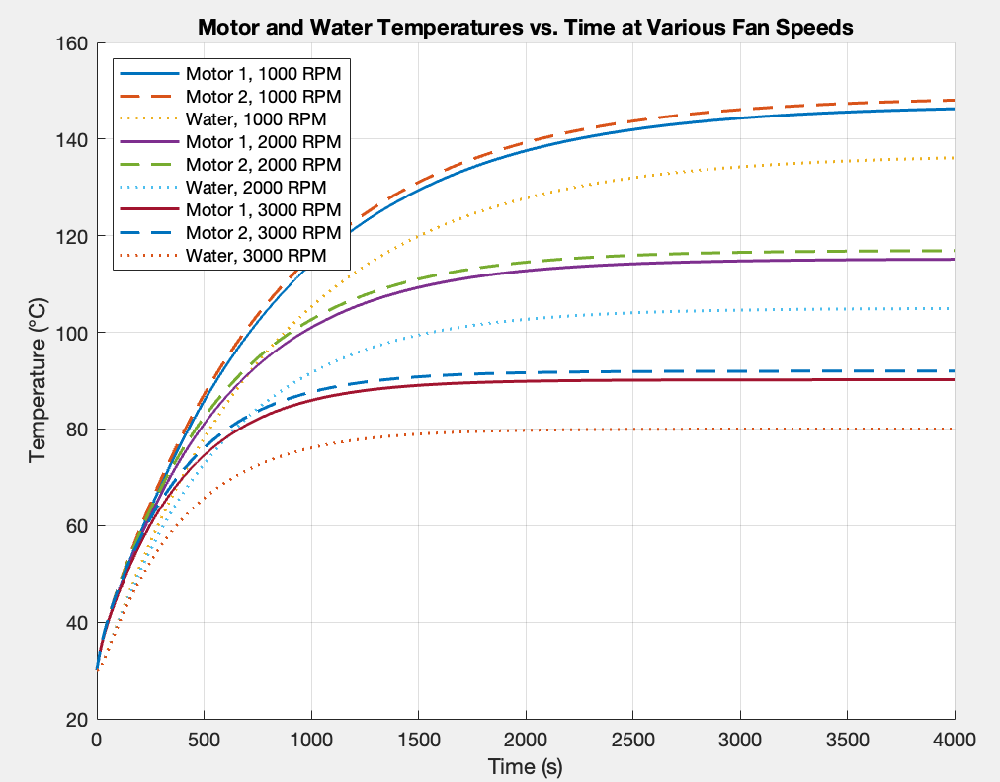

Purdue Electric Racing 2025 Cooling Jacket
The AMK hub motors on the 2025 car arrived without cooling jackets, so I designed one the team could print in house: a single carbon-fibre PPS part with a helical water channel, sealed against the motor face with an O-ring.

It had to keep the motor under 120 °C, never leak, hold its shape at temperature, survive a 1 m drop, meet the rules on grounding, pass at least the manufacturer's 4 L/min of coolant, and cost under $100 a jacket.
Printing it
Only two filaments met both the printer's limits and the thermal ones: PPA and PPS. The jacket ended in PPS reinforced with carbon fibre, because the glass-filled grades are too brittle.
The harder constraint was the channel. Support material printed inside a closed water passage is slow to remove and leaves a poor finish, so the geometry had to print in place with no internal supports at all. That took three revisions: the first, in cheap material, to prove the seal and the flow, and to learn that standard supports were not an option; the second, the first jacket to print in place unsupported, with the seal fixed by a larger O-ring and more compression; the third, in PPS-CF, with a better flow path.


Testing it
The bench rig puts a 1 kW heater inside an aluminium stand-in for the motor, wraps it in the jacket, and runs water through a pump, a flow sensor and a radiator with a blower, with thermocouples on either side of the jacket. A variac sets the heat and a power meter checks it.


At 6.2 and 10.2 L/min, both above the 4 L/min minimum, the water carried away 700 to 740 W and warmed only 1.0 to 1.6 °C crossing the jacket. The aluminium core settled at 62 to 63 °C, and the thermal camera puts the jacket's outer surface at 36 to 38 °C. The measured heat-transfer coefficient came out close to three times the simple cylinder-in-crossflow estimate.
The radiator is the real limit

A 1D thermal model, run at the sustained average power from the lap simulation, treats each motor and the radiator as a node. Its clearest result is that the jacket is not the bottleneck. The motor runs only about 10 °C above the water at every fan speed, while the fan alone moves it from about 147 °C at 1,000 RPM, well over the limit, to 116 °C at 2,000 and 91 °C at 3,000. Once the jacket moves heat well, keeping the motor cool is a radiator and airflow problem.